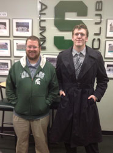

A Little About Myself
My name is Joseph Leroy Beaubien Jr, and I am a recent graduate of Michigan State University. My main interest is game design and art development. I live in East Lansing, where I also work for Media Services as a student worker. My main interests are game design and development, and art of any medium. I come from a small town in Michigan called Hudson.
My Education
I graduated from Hudson High School, and from there I went to study at Jackson Community College(JCC) (formally known as Jackson College). I went to JCC for two years and got a degree in general education, which I then transferred my credits to Michigan State University (MSU), where I studied Media Art and Information Technology.
My Resume
As a portfolio website, it is fitting that I should include a link to my resume. Most of my work has been in Info Tech or game design feilds, and I have lots of experience working with educational technology support. Here is a link to my resume